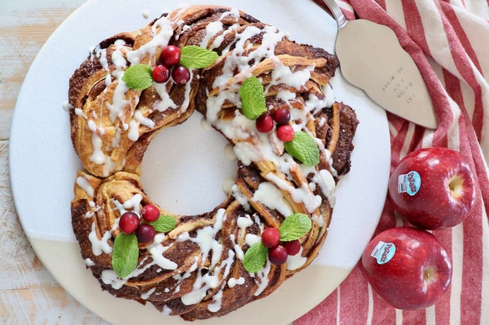
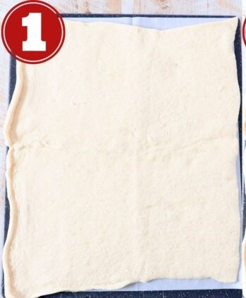
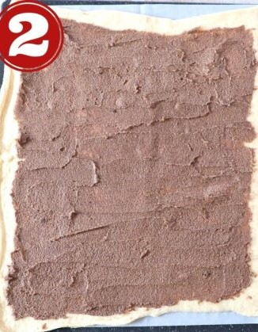
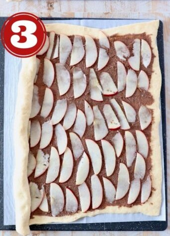
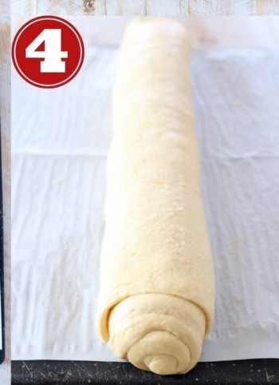
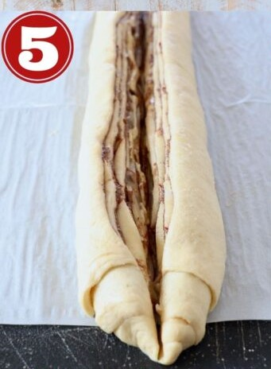
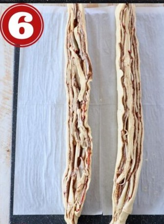
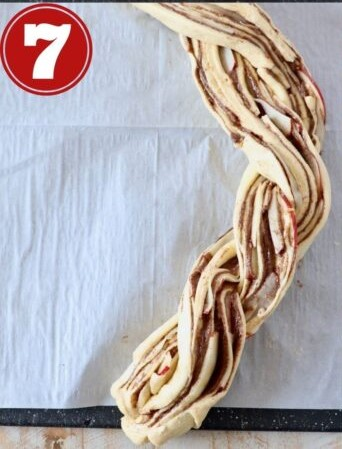
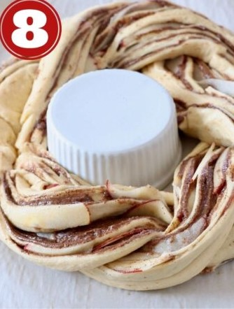

Recipe: Cinnamon Roll Wreath with Apples
Ingredients you’ll need
- Crescent roll dough
You can use canned crescent roll dough, or sheets of canned crescent dough. Either will work, the sheets of dough are simply a little easier to work with because you don’t need to press the crescent roll perforations together.
- Granulated sugar
- Brown sugar
- Ground cinnamon
- Unsalted butter
you’ll want the butter and cream cheese softened prior to making the recipe, so I recommend removing them from the refrigerator at least 30 minutes before starting the recipe, so they can come up to room temperature.
- Pazazz apples
- Cream cheese
- Milk
- Vanilla extract
- Powdered sugar
by step instructions

1.Roll out the crescent roll dough. Place a large piece of parchment paper on a flat work surface. Place both sheets of crescent roll dough slightly overlapping on the parchment paper and press the seams together to form one large crescent roll rectangle.

2.Top with the cinnamon sugar butter. In a medium bowl, combine softened butter with granulated sugar, brown sugar and ground cinnamon. Spread this mixture evenly across the crescent roll dough.

3. Add the apples. Core and thinly slice one Pazazz apple, then place the slices on top of the cinnamon sugar butter in an even layer, not overlapping. Overlapping the apples will make it difficult to roll up and form into the wreath.

4. Roll it up. Roll the crescent roll dough up tightly over the apples and the cinnamon sugar butter into a tube.

5. Slice it in half. Use a sharp knife to slice lengthwise through the middle of the cinnamon roll tube.

6. Separate the two halves. Once you’ve sliced the cinnamon roll tube in half, separate the two halves, and make sure the cinnamon butter and apples are facing up on both halves.

7. Braid them together. Carefully braid the two halves together, lifting one half over the other, then vice versa until it is rolled up into one long braid.

8. Form the wreath. Bring the two ends of the braid together to form the wreath, then transfer the wreath on the parchment paper over to a baking sheet. Bake at 350°F for 20-25 minutes, or until the entire cinnamon roll wreath is golden brown.
After Decoration
source : Cinnamon Roll Wreath with Apples